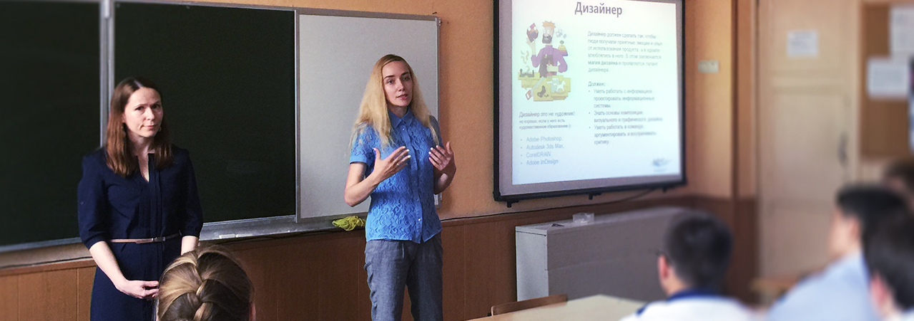
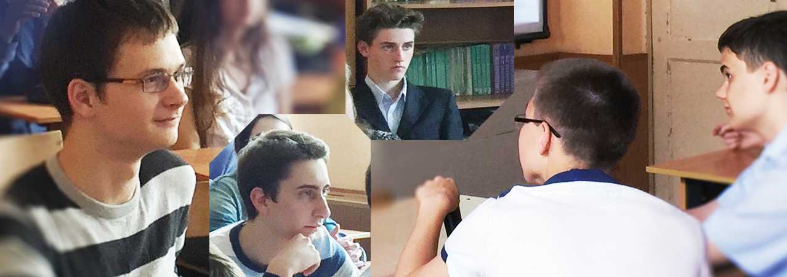
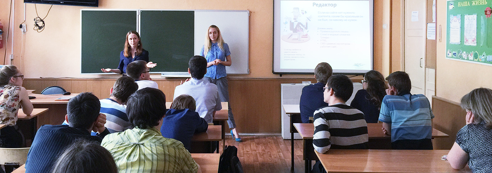

У директора Individ по качеству Ольги Трофимовой трое детей. Старший, Стас, в следующем году заканчивает математическую школу и должен будет определиться с профессией. Весь год в школе проводят уроки профориентации: приходят сотрудники местных компаний, которые на самом деле родители учеников, и рассказывают о своей работе.

В этом месяце урок провела Ольга. В живом диалоге ребята выяснили, как понять, кем хочешь стать, и обосновать свой выбор родителям, если они с тобой не согласны, где найти ресурсы для самообразования, чтобы разбираться в современных технологиях лучше многих взрослых, и как обратить знания в практическую пользу.

«Ребята были ошарашены, когда узнали, что ни одно образование не дает актуальной картины мира. Они привыкли слышать, что учиться самая важная вещь на свете. Можно успешно работать без профильного образования, а профессии, которой они посвятят жизнь, возможно, еще даже не существует это для них было открытием»Лейла Денисенко директор по Клиентам Individ

«В этой школе удивительно талантливые и умные дети, например, есть призеры общероссийских олимпиад, но, как ни странно, учителя и родители не разговаривают с ними на равных, мало рассказывают о том, что их ждет после учебы. Кому-то из них даже в голову не приходило, как школьные знания могут стать профессией и приносить доход. Я очень надеюсь, что мы немного помогли им».
Ольга Трофимова директор по качеству Individ